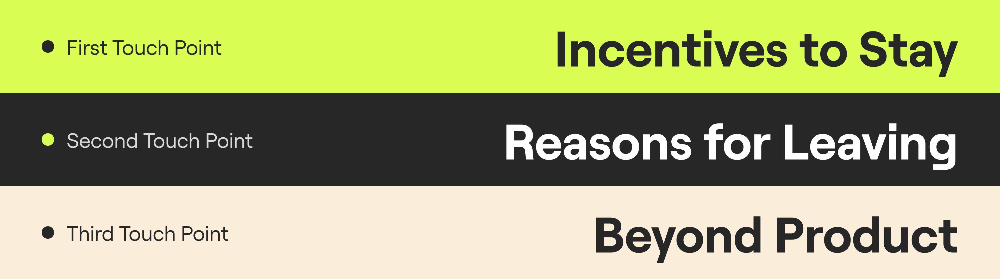
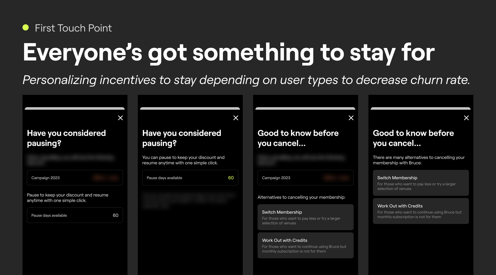
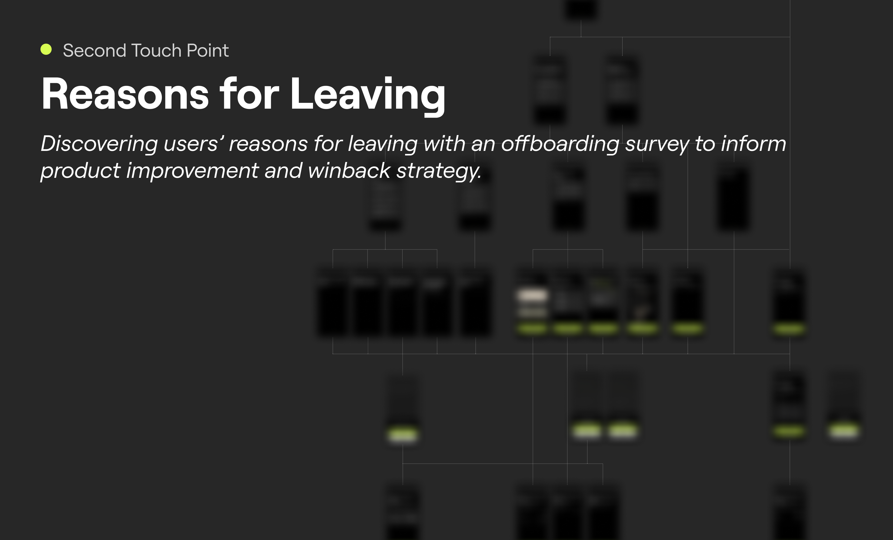
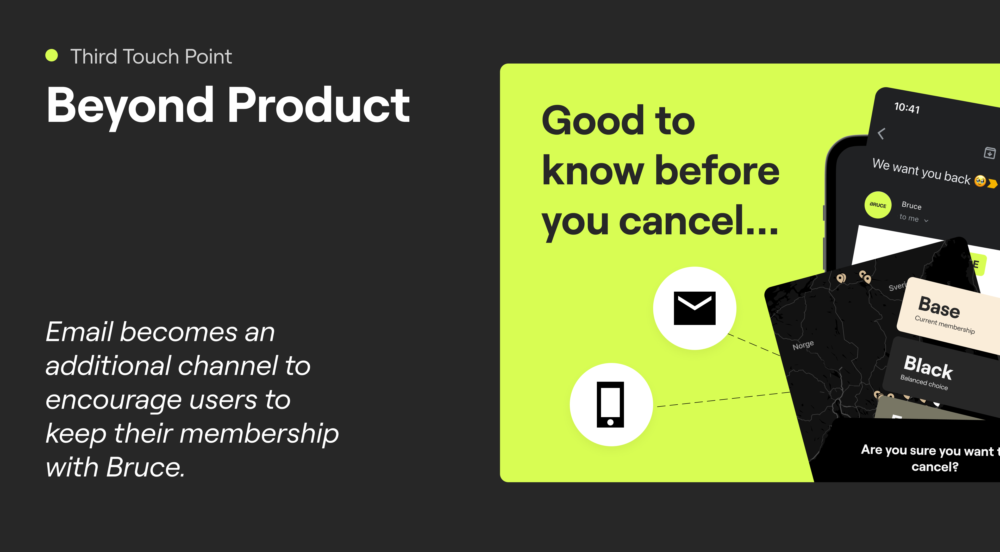

Vy for Bruce
UX Research
Design Thinking Workshop
CX Strategy Design
UX Design
UI Design
Bruce is a fitness subscription service. As Bruce grows its user base, user retention is a very important task to ensure that its growth is sustainable. I helped Bruce discover opportunities and initiatives to rentain its users using Design Thinking discovery workshop, CX Strategy and UX design.
This work was done during my time at SCHMACK, an CX & CRM consulting agency. SCHMACK collaborated with Bruce on the CX/UX Design and CRM operations of this project.
Bruce offers all-in-one subscription for access to multiple workout studios and classes in Sweden, Norway and Denmark.
We conduct UX Research & Design Discovery in order to identify opportunities to improve retention:
Bruce sent out user survey to receive feedbacks on how the product can be improved.
I conducted interviews with Bruce's major stakeholders (CEO, CPO, CSO, CMO) to align UX improvements with business objectives.
Bruce and my team (SCHMACK) attended a co-ideating sessions to symphathize with Bruce users.
We identied three core components that are integral to retaining users who intend to cancel their memberships:
Bruce offers many different types of tiering and an option to pause membership that many users are not aware of. In the first touch point in the offboarding flow, it is important to inform users optimal alternatives that allow users to keep up their working out routine with Bruce based on their subscription and account status.
If the Personalised Alternatives are offered to users based on what Bruce thinks is the best for users, we also listen to users on why they think it is the best for them to cancel their subscription in order to improve the product and tailor our offer to match with their answers.
As users who intend to leave usually are those who have low product usage, we also consider other channels where we interact with users to make sure that leaving users have the best experience with Bruce, whether they decided to continue staying as a user or not.
